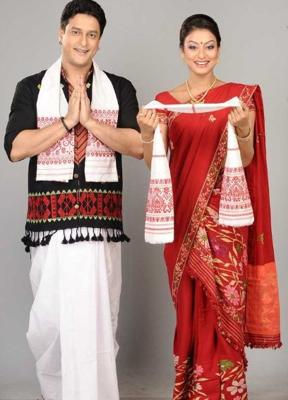

Dhoti Gamosa attire of men:
The Dhoti Gamosa is a traditional dress for men in Assam. It is primarily worn during cultural festivals and religious ceremonies. The dhoti is a long, unstitched piece of cloth wrapped around the waist and legs, while the Gamosa, a symbol of Assamese pride, is draped around the shoulders or head. Worn during events like Bihu on formal functions, the Dhoti Gamosa reflects simplicity, comfort, and cultural pride. The attire is reserved for festive occasions and can also be worn daily, especially in rural Assam